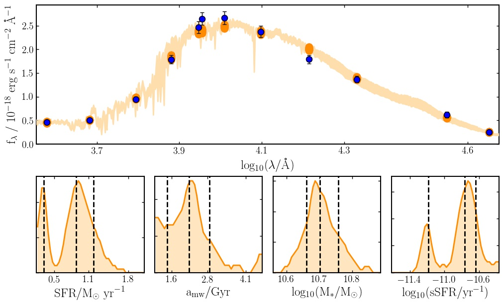

 I've just made public a beta version of the main piece of software I've been developing during my PhD, Bayesian Analysis of Galaxies for Physical Inference and Parameter EStimation, or BAGPIPES.
BAGPIPES is a Bayesian spectral fitting code, designed to model the emission from galaxies from the far-ultraviolet to the microwave regimes, and to fit these models to arbitrary combinations of spectroscopic and photometric observational data using nested sampling. BAGPIPES is written purely in the Python programming language and considerable effort has been made to make the API as intuitive and user-friendly as possible.
You can download the code and read the documentation at bagpipes.readthedocs.io, or view the source code and examples at www.github.com/ACCarnall/bagpipes.